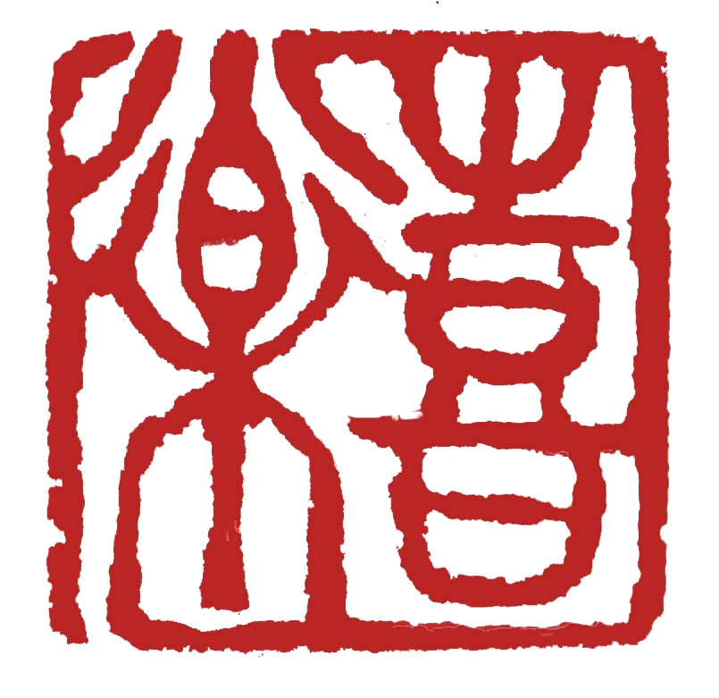
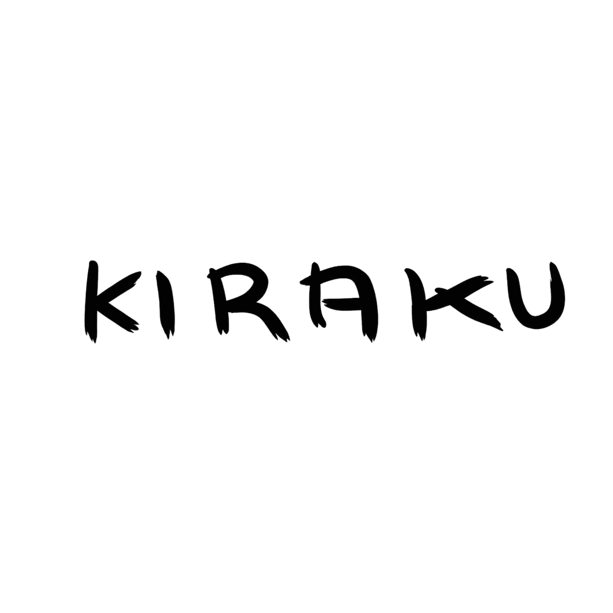

VOYAGES AU JAPON · HORS DES SENTIERS BATTUS
Le site se prépare.
On ouvre bientôt.
Nos premiers itinéraires arrivent. Lents, précis, chez l'habitant.
Une question, écris-nous
voyage@japonautrement.fr喜 楽 · KIRAKU TRAVEL · JAPON AUTREMENT